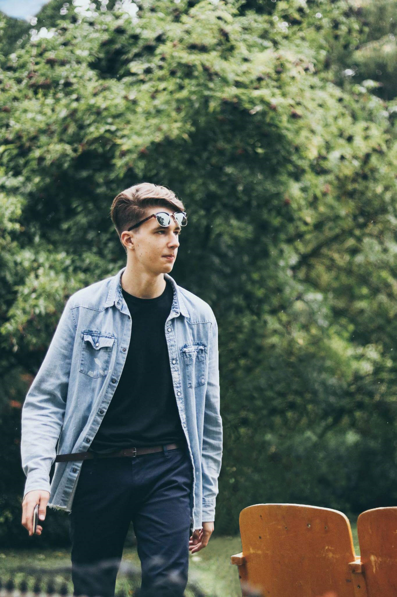

Tadas Kiaunė
Esu studentas ir Vilnius Tech darbuotojas
Apie
Esu 2 kurso elektronikos inžinerijos studentas Vilnius TECH universitete

Pagrindinė informacija
- Gimimo data: 2000-12-25
- Svetainė: Martersa
- Telefonas: 861111111
- Miestas: Vilnius
- Amžius: 23
- Išsilavinimas: Baklauras 2023-dabar
- Gmail: pastas.pastaitis@gmail.com
CV
Išsilavinimas
Elektronikos inžinerijos bakalauras
2023 - dabar
Pirmosios pakopos studijos Vilnius TECH universitete
Medicinos magistras
2020 - 2023
Vientisosios studijos VU medicinos fakultete
Profesinė patirtis
Technikas
2024 - dabar
Techniko pareigos Vilnius TECH kompiuterijos ir ryšių technologijų katedroje
Specialistas
2023 - 2023
Specilisto pareigos VU medicinos fakulteto fiziologijos, molekulinės biologijos, biochemijos ir laboratinės medicinos katedroje
Portfolio
Mano asmeniniai projektai bei jų pavyzdžiai
- Visi
- Muzika
- Elektronikos inžinerija
- Programinė įranga

Youtube klipas
Thunderstruck pianino koveris

Kameros robotas
Programuojamas robotas skirtas valdyti kamerą

SMD litavimo orkaitė
Programuojama litavimo orkaitė programuojama per wifi

FEEGUUR game
Android žaidimas publikuotas Google Play
Services
Paprastų spausdintinių plokščių projektavimas, 3D spausdinimas,
mikrovaldiklių programavimas, pagalbiniai programavimo darbai,
įvarių elektronikos įtaisų remontas,